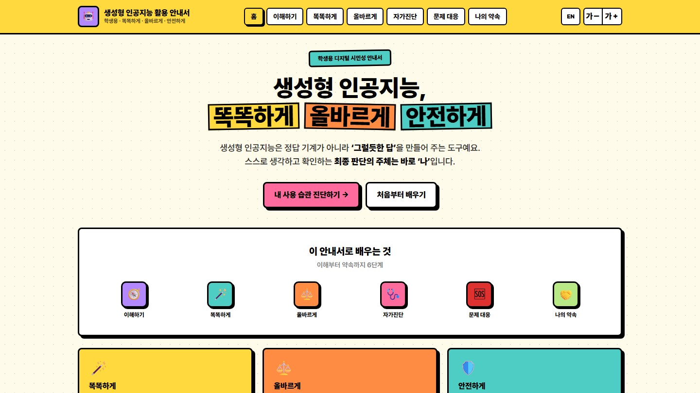
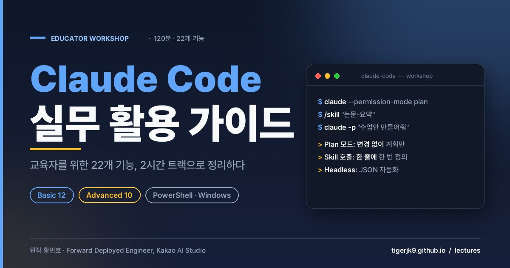
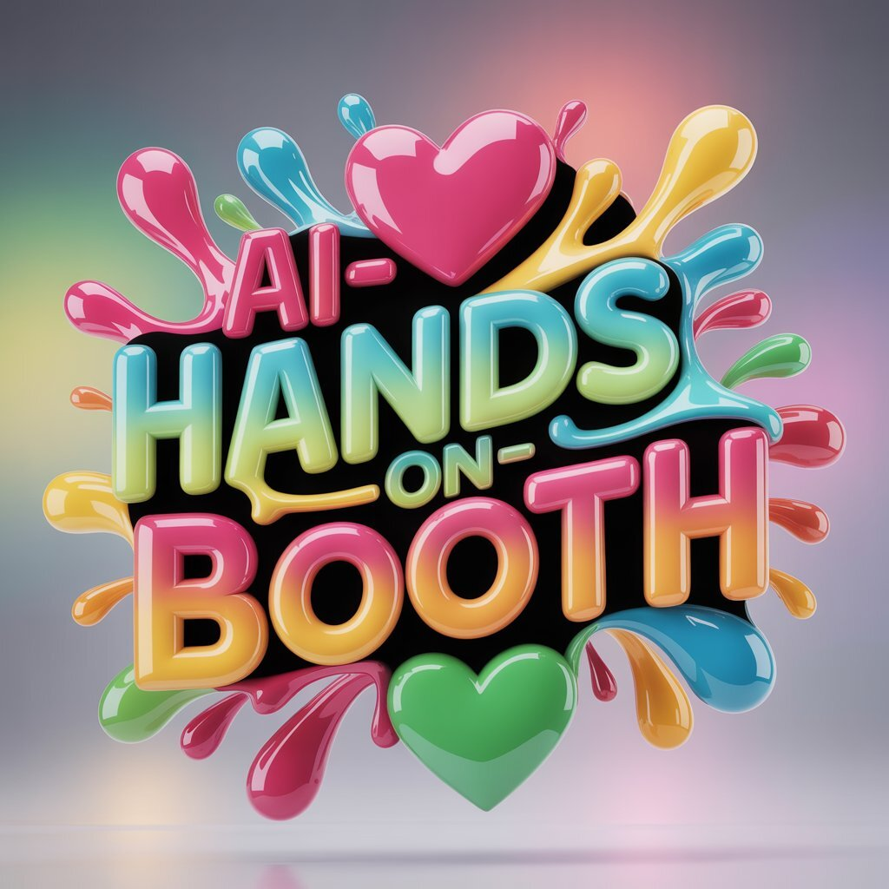
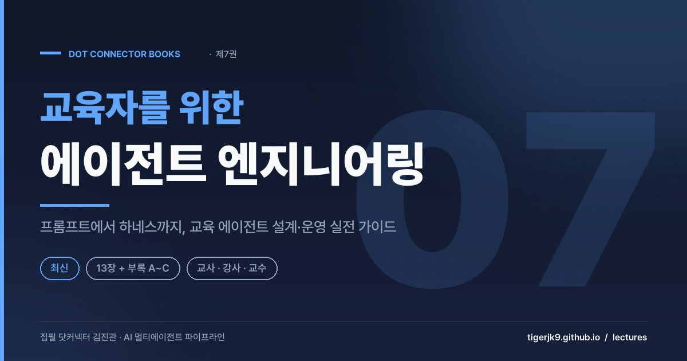
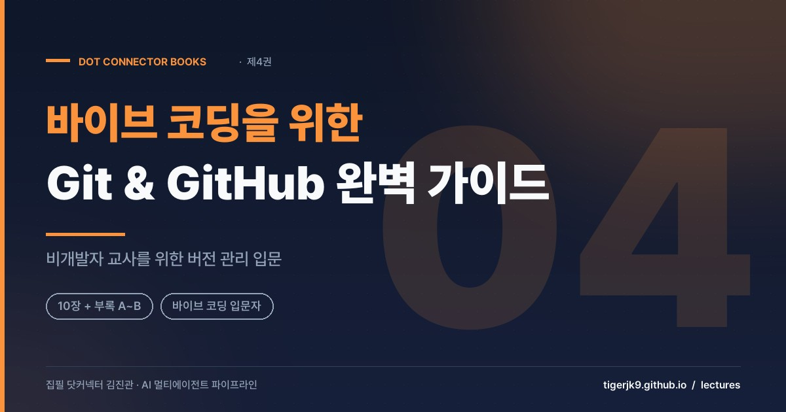
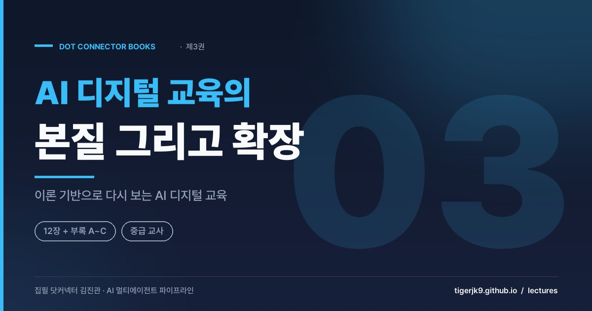
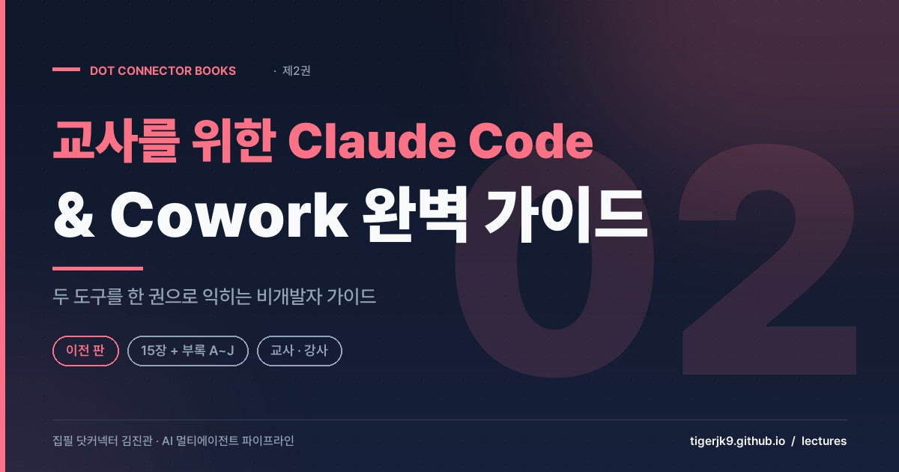

학생이 생성형 AI를 안전하고 비판적으로 쓰도록 돕는 지도자료.
열기 ↗
업무 수행형 에이전트(Claude Code)를 교사가 직접 다뤄 보는 실습 강의.
열기 ↗AI에게 위임해 실제로 만들어 본 웹앱 모음. 에이전트 리터러시의 감을 익힌다.
열기 ↗
다양한 생성형 AI 웹앱을 직접 만져 보는 체험 모음. 연수·수업 도입에 유용.
열기 ↗교육 뉴스·AI 논문·기술 동향을 매일 정리. 정책이 계속 바뀌는 AX에서 감을 유지한다.
열기 ↗
비개발자 교육자를 위한 에이전트 엔지니어링 심화 원고. 6장의 다음 단계를 13개 장으로 확장한다.
🔒 비밀번호로 열기 ↗
바이브 코딩에 필요한 Git·GitHub를 비개발자 교사 눈높이로 풀어낸 실습 원고.
열기 ↗
AI 디지털 교육의 이론적 본질과 현장 확장을 다룬 중급 교사용 원고.
🔒 비밀번호로 열기 ↗
교사를 위한 Claude Code·Cowork 실무 가이드. 프롤로그와 15개 장으로 구성.
열기 ↗초등 담임 교사를 위한 클로드코드 입문 원고. 프롤로그와 11개 장으로 구성.
열기 ↗↗ 표시는 저자(닷커넥터)의 GitHub·배포 사이트로 이동합니다. 🔒 도서 원고는 비밀번호로 보호되며, 카드를 누른 뒤 비밀번호를 입력하면 열립니다. 도구·원고는 계속 갱신됩니다.